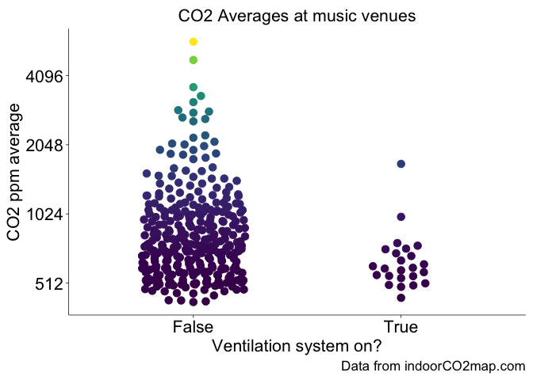
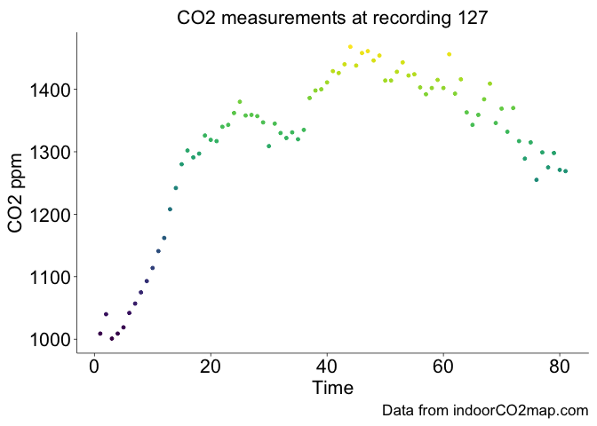

Auto ˈɔːtəʊ - short for automobile, a car
Cruller ˈkrʌl ər a pastry roll or bun
autocruller - car bun
{autocruller} allows one to download, manipulate and visualize CO2 readings from the indoorco2map.com dataset.
Please support that project by contributing CO2 readings, reporting bugs, telling your friends and financially supporting it (if you feel inclined).
Carbon Dioxide is important, Y’all
There is a well documented relationship between indoor levels of CO2 and the amount of ventilation in indoor environments. Buildings with high indoor levels of CO2 have poor ventilation and are therefore more likely to be vectors of airborne diseases (like COVID-19, Measles, and Flu) and to trap indoor pollutants.
Never used R before?
Read this
Installation
You can install the development version of autocruller from GitHub with:
# install.packages("pak")
pak::pak("samherniman/autocruller")Get started
Download the latest data with ac_get_co2()
library(autocruller)
ac_df <- ac_get_co2()That will give you a dataframe with all the current CO2 measurements.
dplyr::glimpse(ac_df)
#> Rows: 10,660
#> Columns: 18
#> $ .id <int> 1, 2, 3, 4, 4, 4, 4, 5, 6, 7, 8, 9, 10, 11, 12, 12, 12,…
#> $ combined_id <chr> "n_10000066104", "n_10000660271", "n_10013427033", "n_1…
#> $ osmtag <chr> "supermarket", "fast_food", "supermarket", "greengrocer…
#> $ osmkey <chr> "shop", "amenity", "shop", "shop", "shop", "shop", "sho…
#> $ countryid <chr> "DEU", "USA", "DEU", "DEU", "DEU", "DEU", "DEU", "AUT",…
#> $ countryname <chr> "Germany", "United States of America", "Germany", "Germ…
#> $ nuts3id <chr> "DEA1B", "", "DE712", "DEA2C", "DEA2C", "DEA2C", "DEA2C…
#> $ nwrname <chr> "ALDI Süd", "Naya", "EDEKA Langanki", "Hofladen Schmitz…
#> $ startTime <dbl> 1.728744e+12, 1.746378e+12, 1.730192e+12, 1.730131e+12,…
#> $ ppmavg <dbl> 1795.4000, 613.8235, 579.3333, 608.6000, 484.6000, 832.…
#> $ co2array <list> <1623, 1699, 1745, 1805, 1836, 1831, 1854, 1860, 1842,…
#> $ ventilation <chr> "False", "False", "False", "False", "False", "False", "…
#> $ openwindows <chr> "False", "False", "False", "False", "False", "False", "…
#> $ occupancylevel <chr> "undefined", "undefined", "undefined", "undefined", "un…
#> $ customnotes <chr> "", "", "", "", "", "", "", "", "", "", "", "", "", "Ha…
#> $ co2atlaskey <chr> "shop", "dining_drinking", "shop", "other", "other", "o…
#> $ date <dttm> 2024-10-12 15:32:07, 2025-05-04 17:55:28, 2024-10-29 0…
#> $ geometry <POINT [°]> POINT (6.241554 51.5718), POINT (-73.99597 40.751…If you want the co2arrays to be in long format, you can do this:
ac_df_long <- tidyr::unnest_longer(ac_df, co2array)Make a graph
pak::pak("tidyplots")You can compare averages with the wide format data
library(tidyplots)
types_c <- c(
"arts_centre", "events_centre", "cinema",
"social_facility", "theatre", "music_venue",
"music", "nightclub", "social_centre", "concert_hall"
)
ac_df |>
dplyr::filter(osmtag %in% types_c) |>
tidyplot(
x = ventilation,
y = ppmavg,
color = ppmavg
) |>
add_data_points_beeswarm(size = 3) |>
adjust_y_axis(transform = "log2") |>
adjust_size(width = NA, height = NA, unit = "cm") |>
adjust_font(fontsize = 16) |>
adjust_x_axis_title("Ventilation system on?") |>
adjust_y_axis_title("CO2 ppm average") |>
remove_legend() |>
adjust_title("CO2 Averages at music venues") |>
adjust_caption("Data from indoorCO2map.com")
And track things over time with the long format data
ac_df_long |>
dplyr::filter(.id == 127) |>
dplyr::mutate(
measurement_sequence = dplyr::row_number()
) |>
tidyplot(
x = measurement_sequence,
y = co2array,
color = co2array
) |>
add_data_points() |>
adjust_size(width = NA, height = NA, unit = "cm") |>
adjust_font(fontsize = 16) |>
adjust_x_axis_title("Time") |>
adjust_y_axis_title("CO2 ppm") |>
remove_legend() |>
adjust_title("CO2 measurements at recording 127") |>
adjust_caption("Data from indoorCO2map.com")